|
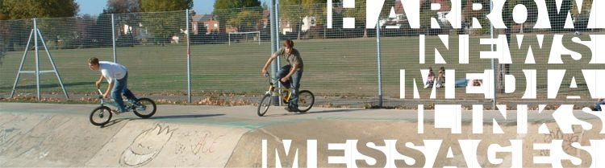 Me Tim and Seb went to Harrow about 18 months ago when seb rode and before Tim broke his arm. I originally made this page whe Tim wasn't riding. 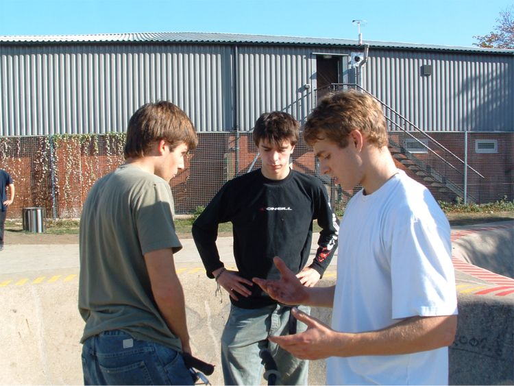 The thisisnotaskateboard team before it all went wrong. These were the days. 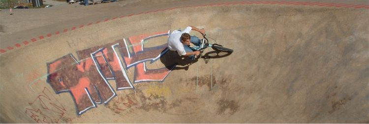 Harrow is soo fun. 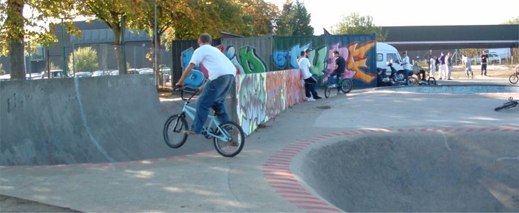 Snake run to vert bowl manual. 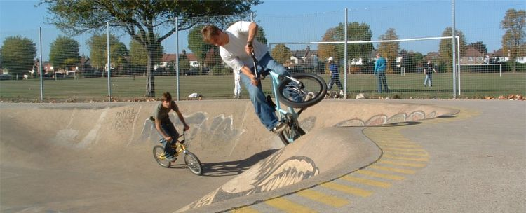 What is that? 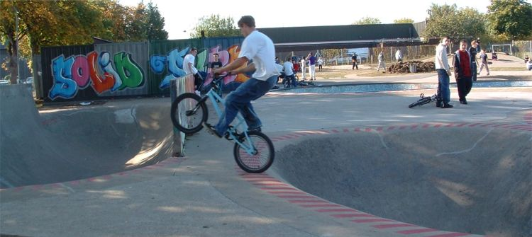 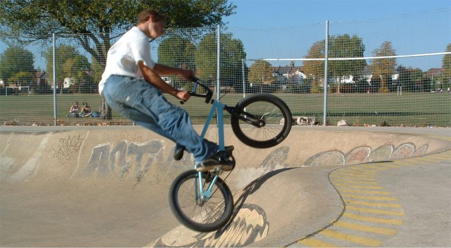 Another strange thing. 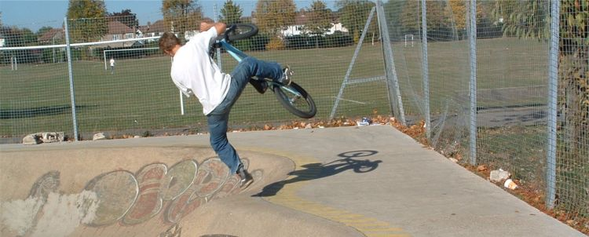 Footplant? 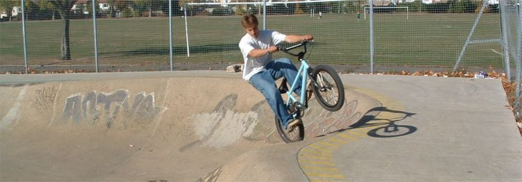 Tim tries some strange things when he rides. 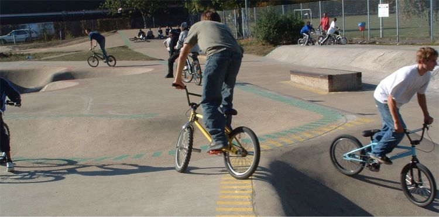 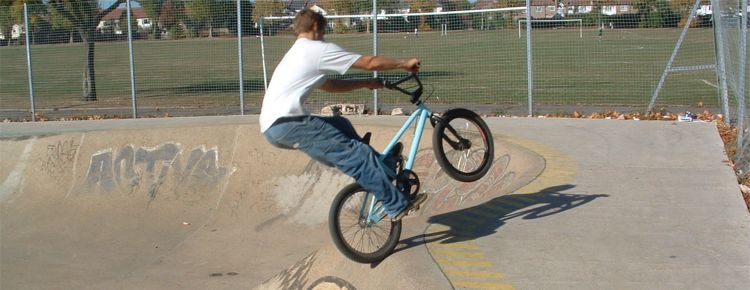 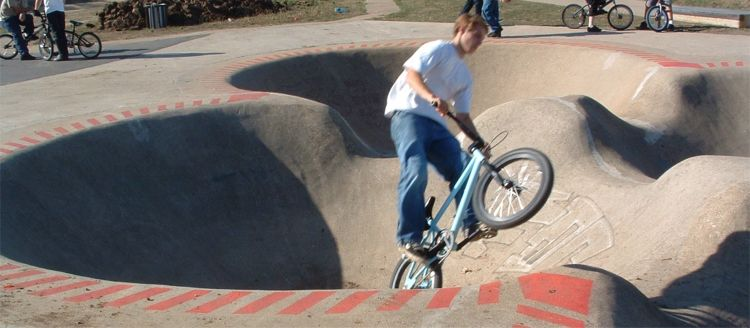 But he could go round and round the clover bowl. 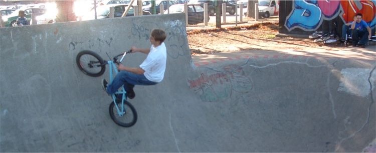 Need to go to Harrow soon. 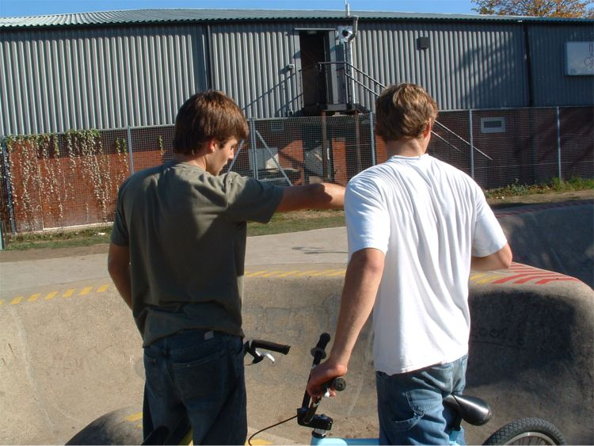 Me pointing at a line. About 5 minutes later I tried the line. It was one of the most painful moments of my life. |